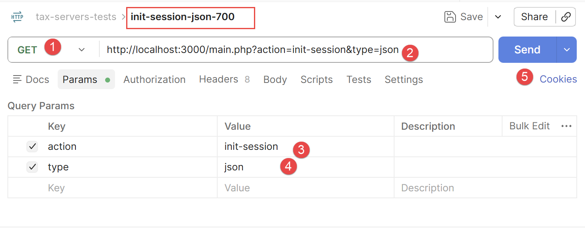
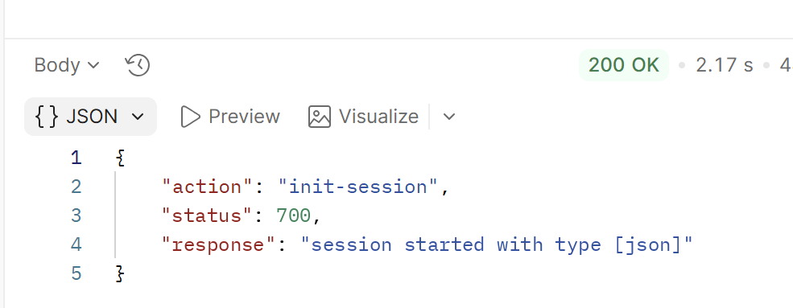
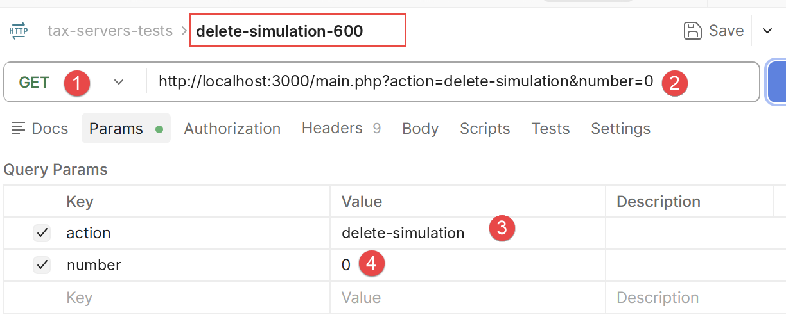

4. 安装 NestJS 服务器
注意：下文有时会提到一个 PHP 服务器，即课程 [Introduction to the PHP7 Language Through Examples] 中提到的那个服务器。NestJS 服务器实现了与该 PHP 服务器相同的服务。
我们将讨论 TypeScript 的 HTTP 功能——即让您能够查询 Web 服务器的功能。为了测试，我们需要一个 Web 服务器。我们将使用在 “案例研究” 一节中开发的服务器：NestJS 中的税款计算服务器。 该服务器托管了一个 jSON 服务，提供以下服务：
- [init-session] —— GET main.php?action=init-session&type=json ——告诉服务器我们需要 jSON 响应；
- [authenticate-user] —— POST main.php?action=authenticate-user：两个 提交的 参数 [user, password] 决定是否授权连接到 jSON 服务。默认情况下，凭据为 [admin, admin]；
- [calculate-tax] —— POST main.php?action=calculate-tax： 提交的参数 [married, children, salary] 用于计算税款：
- married：已婚为“yes”，否则为“no”；
- children：纳税人的子女数量；
- salary：纳税人的年薪；
- [list-simulations] —— GET main.php?action=list-simulations ——列出自会话开始以来执行的模拟；
- [delete-simulation] —— GET main.php?action=delete-simulation&number=x ——从模拟列表中删除第 x 号模拟；
- [get-admindata] —— GET main.php?action=get-admindata ——将与服务器关联的整个数据库检索到一个 jSON 对象中；
- [end-session] —— GET main.php?action=end-session：结束会话。要开始新的会话，用户必须发出上述“init-session”命令；
我们现在将介绍如何安装该服务器。如果您不想安装该服务器，请直接跳到 “TypeScript 的 HTTP 功能”一节。您将无法在真实环境中测试这些脚本，但可以查看其代码。
4.1. 安装 Laragon
截至 2026 年 9 月，可以在 URL [Download Laragon – Fast & Modern Dev Environment ] 获取 Laragon 工具。Laragon 包含可用于安装 PHP 服务器和 MySQL 数据库管理系统的工具：

- 在 [1] 中，是一个 Apache Web 服务器；
- 在 [2] 中，是 MySQL 数据库管理系统；
- 在 [3] 中，是一个我们不会使用的邮件工具；
- [4] 启动所有服务（Apache、MySQL、MailPit）；
- [5] 在 URL [http://localhost] 处显示网页。默认情况下，该 URL 指向 <laragon-install>\www 文件夹，其中 <laragon-install> 是 Laragon 的安装文件夹；
- 在 [6] 中，启动 HeidiSQL 工具，它可以管理 MySQL 数据库。我们将使用这个工具来创建税款计算服务器所使用的数据库；
- 在 [7] 中，打开一个终端；Laragon 所需的所有二进制文件都在 PATH 中；
- 在 [8] 中，打开与 URL [http://localhost] 关联的文件夹所在的 Windows 资源管理器；
Laragon 安装文件夹包含以下内容：
 |
- 在 [1] 中，[bin] 文件夹包含许多应用程序：
 |
- 在 [1] 中，是 Apache Web 服务器；
- 在 [2] 中，是一个命令行终端；
- 在 [3] 中，是一个 [git] 客户端，可用于管理项目的不同版本；
- 在 [4] 中，是一个数据库管理器；
- [5]，是一个电子邮件管理器；
- 在 [6] 中，是 MySQL 数据库管理系统；
- [7]，是另一个 Web 服务器；
- 在 [8] 中，是用于运行 JavaScript 脚本的 [node.js]；
- [9]，是一个文本编辑器；
- 在 [10] 中，是 PHP 解释器；
- 在 [11] 中，是 [Python] 解释器；
- [12]，是一个缓存服务器；
Laragon 自带一套完整的开发环境。在本课程中，我们只使用 MySQL 数据库管理系统 [6] 和 [heidisql] 来以图形方式管理它；
4.2. NestJS 服务器的安装与配置
本课程脚本目录中的 nestjs-case-study 文件夹里有一个用于高度简化的税款计算的 NestJS 服务器：
nestjs-case-study/
├── package.json
├── nest-cli.json
├── .env.example
├── create_dbtaxes.sql
├── src/
│ ├── main.ts
│ ├── main.controller.ts
│ ├── app.module.ts
│ ├── actions/
│ ├── config/
│ ├── entities/
│ ├── filters/
│ ├── model/
│ ├── responses/
│ ├── session/
│ └── utilities/
└── views/
如果您已经为整个目录树安装了依赖（在根目录下通过 npm install 并借助本文档简介中所述的 npm workspaces 完成），则 nestjs-case-study 文件夹中已经包含其 node\_modules。否则，请进入该文件夹并运行：
服务器需要一个 .env 文件，用于指定 Laragon 创建的 MySQL 数据库（见上文）的连接设置以及监听端口。将提供的 .env.example 文件复制为 .env ，然后进行自定义：
PORT=3000
TAX_DATA_SOURCE=mysql
DB_HOST=localhost
DB_PORT=3306
DB_NAME=dbtaxes-2019
DB_USER=admtaxes
DB_PASSWORD=pwdtaxes
CORS_ALLOWED=true
SESSION_SECRET=change-me-in-production
- PORT：NestJS 服务器的监听端口（默认值为 3000）。
- TAX_DATA_SOURCE：mysql，表示使用下面创建的数据库；
- DB_HOST、DB_PORT、DB_NAME、DB_USER、DB_PASSWORD：我们将用 HeidiSQL 创建的 dbtaxes-2019 数据库的连接参数（见下文）——与上面目录树中所示的 create_dbtaxes.sql 脚本中定义的凭据相同；
- CORS_ALLOWED：允许来自运行在不同端口上的 TypeScript 客户端的 CORS（跨域）调用。
- SESSION_SECRET：用于签名会话 Cookie 的密钥——如果服务器将来要公开访问，请更改它。
4.3. 创建数据库
要创建 NestJS 服务器所需的 MySQL 数据库，我们使用 Laragon 的一个选项：
 |
- 在 [1] 中，必须启动所有服务；
- 在 [2] 中，[Database] 选项可用于管理数据库；
[Database] 选项会启动一个名为 HeidiSQL 的实用工具：
 |
- 在 [1] 中，可以选择各种数据库管理系统。提供的默认值是 MySQL 数据库管理系统。这样就可以了；
- 在 [2] 中，登录 HeidiSQL；
 |  |
- 在 [1-2] 中，运行 SQL 文件，然后选择 [create_dbtaxes.sql] 文件，您可以在 [nestjs-case-study] 文件夹中找到它：

运行 [2] 文件将创建税款计算服务器所使用的 [dbtaxes-2019] 数据库。要查看它，请在 HeidiSQL 中按 F5 刷新显示：
 |
数据库 [dbtaxes-2019] 已创建。
4.4. 启动 NestJS 服务器
一旦 .env 文件就位（并且数据库已创建），请在 [nestjs-case-study] 文件夹的根目录下打开一个终端，然后编译并启动服务器：
在开发时，若要在每次修改源代码后自动重启，请使用：
在这两种情况下，控制台都会显示：
[Nest] ... [NestFactory] Starting Nest application...
[Nest] ... [InstanceLoader] AppModule dependencies initialized
[Nest] ... [RoutesResolver] MainController {/}:
[Nest] ... [RouterExplorer] Mapped {/main.php, ALL} route
[Nest] ... [NestApplication] Nest application successfully started
Tax calculation server (NestJS) started on http://localhost:3000
JSON entry point: http://localhost:3000/main.php?action=init-session&type=json
HTML entry point: http://localhost:3000/main.php?action=init-session&type=html
NestJS 服务器只有一个入口点（main.php，为兼容起见保留了该名称，尽管这里用的是 NestJS），它接收所有请求，并通过一个 “action” 请求参数来选择要执行的处理：
4.5. HTML 税款计算服务器的测试
如果您尚未这样做，请启动 Laragon 的所有服务（用于 MySQL）以及 NestJS 服务器（npm run start:prod 或 npm run start:dev；见上文）。然后，在浏览器中请求 URL http://localhost:3000/main.php?action=init-session&type=html ——这与 PHP 服务器的 init-session 操作相同，带有相同的 type=html 参数，只是端口为 3000：
 |
凭据是 admin/admin，与 PHP 服务器完全相同——它们以相同的方式定义，位于服务器代码中，而不是 config.json 中。输入它们：
 |
填写表单，然后提交。您将看到以下页面：
 |
税款计算结果已显示——这个页面确实使用了我们刚刚创建的数据库。左侧菜单中的“模拟列表”链接会显示本次会话的计算历史：
 |
如果您得到了这些结果，说明 NestJS 税款计算服务器及其 MySQL 数据库工作正常。我们现在可以用 TypeScript 客户端查询该服务器了。为此，我们将使用服务器的 jSON 版本。
4.6. 税款计算服务器的 jSON API
4.6.1. Postman 测试
PHP 服务器是使用 Postman 桌面工具测试的。同一个请求集合（tax-servers-tests.postman_collection.json，位于 nestjs-course 文件夹中）在 NestJS 服务器上的工作方式完全相同：jSON API 完全一样——相同的操作、相同的参数、相同的 状态码。在 Postman 中，只需更改每个请求的端口（80 → 3000），或者更简单地，如果您已将 基础 URL 在集合中定义为变量，则直接修改它。
Postman 工具可在 URL [https://www.postman.com/downloads/] 获取。您可能需要创建一个账户。
启动所有 Laragon 服务，然后打开 Postman 桌面应用：
 |  |
- 在 [1-2] 中，创建一个 HTTP 请求来查询税款计算服务器；
 |
- 在 [1] 中，您可以为 HTTP 请求命名。您可以保存它并在以后检索；
- 在 [2] 中：输入要查询的服务器的 URL；
- 在 [3] 中：选择 HTTP 请求类型。接下来我们将使用其中的两种：GET 和 POST；
- 在 [4] 中：如果您的查询带有 [?param1=val1¶m2=val2&…] 形式的参数，可以在这里定义它们；
- 在 [5] 中：如果查询类型是 POST，则在这里定义提交的值；
在 [nestjs-course] 中，您会找到一个针对税款计算服务器的 HTTP 请求集合，可以将其导入 POSTMAN。

操作如下。在 Postman 中，按 [Ctrl-O]：
 |
- 使用链接 [1] 从 [nestjs-course] 文件夹中导入文件 [tax-servers-tests.postman_collection.json]：
 |
- 在 [1] 中，是所导入集合的名称；
- 在 [2] 中，是其内容。这是一个发往税款计算服务器（jSON）的（HTTP）请求列表；
例如，我们来看名为 [init-session-json-700] 的请求。它与服务器发起一个 jSON 会话：
 |
- 在 [1] 中，HTTP 请求是 GET；
- 在 [2] 中，是被请求的 URL。它请求与服务器发起 jSON 对话；
- 在 [3-4] 中，我们看到 GET 的参数；
- 在 [5] 中，将请求发送到税款计算服务器；
发送请求之前，请确保已启动 Laragon 服务。服务器的 jSON 响应如下：
 |
现在使用名为 [init-session-703] 的请求：

请求 [1-3] 是无效的。参数必须具有 [?action=xx&type=yy] 的形式，其中“type”可以是“html”、“xml”或“json”。类型“x”将不会被识别。服务器的 jSON 响应如下：
 |
重新发送请求 [init-session-json-700] 以重新启动一个 jSON 会话。然后发送请求 [authenticate-user-200] 来进行身份验证：
 |
- 在 [1] 中，请求是 POST；
- 在 [2] 中，是身份验证请求的 URL；
- 在 [3] 中，是 POST 的主体，其中包含提交的值；
- [4-5]，是两个提交的值。它们是应用程序管理员的凭据。它们定义在服务器的 [config.service.ts] 文件中；

服务器的 jSON 响应如下：
 |
身份验证通过后，您就可以进行税款计算了。为此，请使用查询 [calculate-tax-300]：
 |
- 在 [1] 中，这是一个 POST 请求；
- 在 [2] 中，是被请求的 URL；
- 在 [3-4] 中，提交了三个值；
jSON 响应如下：
 |
多次运行该请求，每次更改提交的值。完成后，运行请求 [list-simulations-500]，它将显示您已执行的模拟列表：
 |
- GET 请求 [1-4] 只有一个参数：[action]。jSON 响应如下：
 |
这就是您已执行的模拟的列表。
使用查询 [delete-simulation-600] 删除一个模拟：
 |
- 在 [2] 中，使用 GET 查询 URL。它包含两个参数 [action, number]。[number] 是您想从模拟列表中删除的模拟的编号。这里，编号 0 指的是列表中的第一个模拟；
服务器的 jSON 响应如下：
 |
jSON 响应是删除其中一个模拟之后剩余的模拟列表；
最后，您可以使用请求 [end-session-400] 结束会话：
 |
查询 URL [1-2] 只有参数 [action]（3）。jSON 响应如下：
 |
4.6.2. curl 测试
我们也可以使用 [curl] 工具来测试服务器的 jSON 服务。以下所有请求都使用同一个 HTTP 会话（-b/-c cookies.txt 选项在 curl 中会在调用之间保留会话 Cookie，就像浏览器或 Postman 所做的那样）：
我们用 [init-session] 操作来启动一个 jSON 会话：
状态码 700 确认会话已启动——这与 PHP 服务器返回的代码相同。现在我们使用 [authenticate-user] 操作进行身份验证——这是一个 POST 请求，URL 中只有一个参数（action），外加提交的凭据：
curl -b cookies.txt -c cookies.txt -X POST "http://localhost:3000/main.php?action=authenticate-user" \
-d "user=admin&password=admin"
{
"action": "authenticate-user",
"status": 200,
"response": "Authentication successful [admin, admin]"
}
现在您可以使用操作 [calculate-tax] 来计算税款，这同样是一个 POST 请求 ，带有三个提交的参数：婚姻状况、子女数、和 年薪：
curl -b cookies.txt -c cookies.txt -X POST "http://localhost:3000/main.php?action=calculate-tax" \
-d "married=yes&children=2&salary=45000"
{
"action": "calculate-tax",
"status": 300,
"response": {
"married": "yes",
"children": 2,
"salary": 45000,
"tax": 502,
"surcharge": 0,
"discount": 857,
"reduction": 126,
"rate": 0.14
}
}
这些值与上一节中在浏览器里显示的完全相同（税款 502 欧元、减免 857 欧元、扣减 126 欧元、税率 14%）——HTML 和 jSON 两个版本共用同一个计算引擎。模拟列表通过操作 [list-simulations]获得，这是一个简单的 GET：
{
"action": "list-simulations",
"status": 500,
"response": [
{
"married": "yes", "children": 2, "salary": 45000,
"tax": 502, "surcharge": 0, "discount": 857, "reduction": 126, "rate": 0.14
}
]
}
多次运行查询 [calculate-tax] 并更改提交的值，然后使用 [delete-simulation] 从列表中移除一个模拟（&number=x 指它的序号），并使用 [get-admindata] 以 jSON 格式检索整个数据库（税率档次和计算常量）。最后，使用操作 [end-session]结束会话：
您现在已经很好地了解了 NestJS 税款计算服务器所公开的 jSON API——它与 PHP 服务器的完全相同。接下来我们可以开始编写查询该服务器的 TypeScript 脚本了。